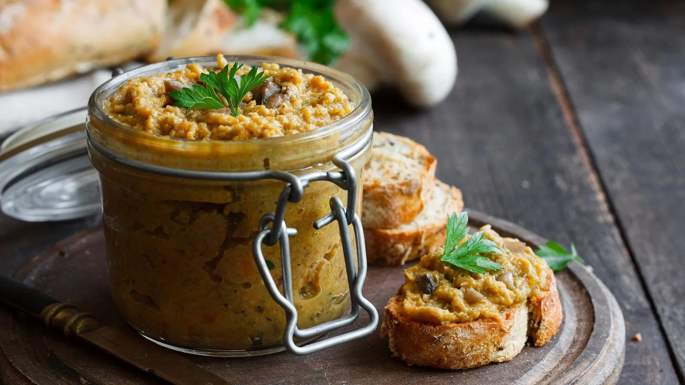

Linsen-Dip

Zutaten
| 1 Tasse |
Rote Linsen |
|
Salz |
|
Pfeffer |
|
Paprika |
Zubereitung
Schritt 1: Vorbereitung der Linsen
- 1 Tasse Linsen in einen Topf geben.
- Doppelte bis dreifache Menge Wasser hinzugeben.
Schritt 2: Würzen und Kochen
- Mit Salz, Pfeffer und Gewürzen nach Belieben würzen.
- Einmal aufkochen lassen.
- Dann Hitze reduzieren und auf kleiner Flamme köcheln lassen.
Schritt 3: Kochen der Linsen
- Die Linsen köcheln lassen, bis sie die gewünschte Konsistenz erreicht haben (normalerweise 20-30 Minuten).
Schritt 4: Fertig zum Servieren
- Gekochte und gewürzte Linsen abkühlen lassen.
- Linsen-Dip in eine Schüssel geben.
- Optional mit frischen Kräutern oder einem Spritzer Zitronensaft garnieren.